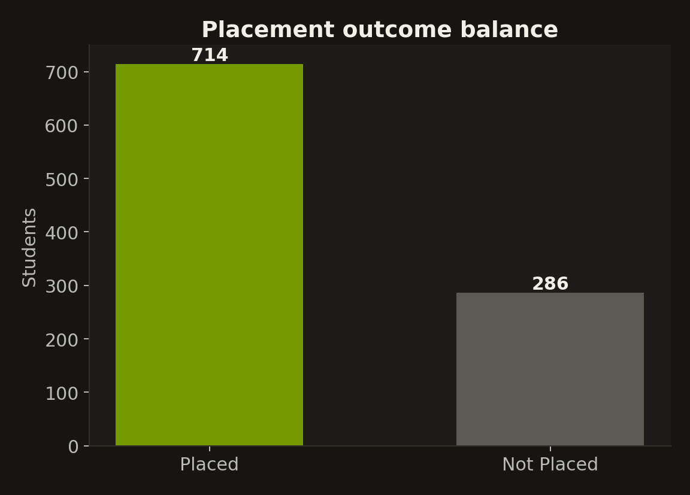
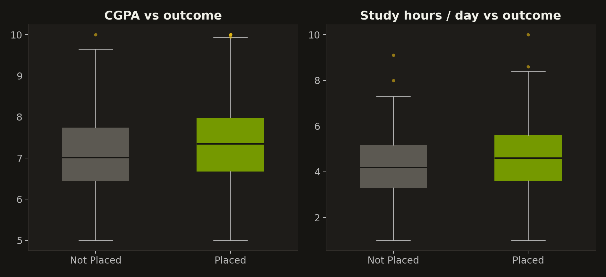
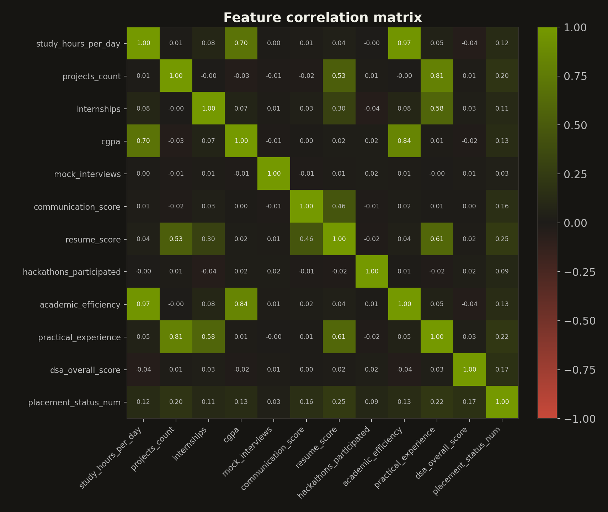
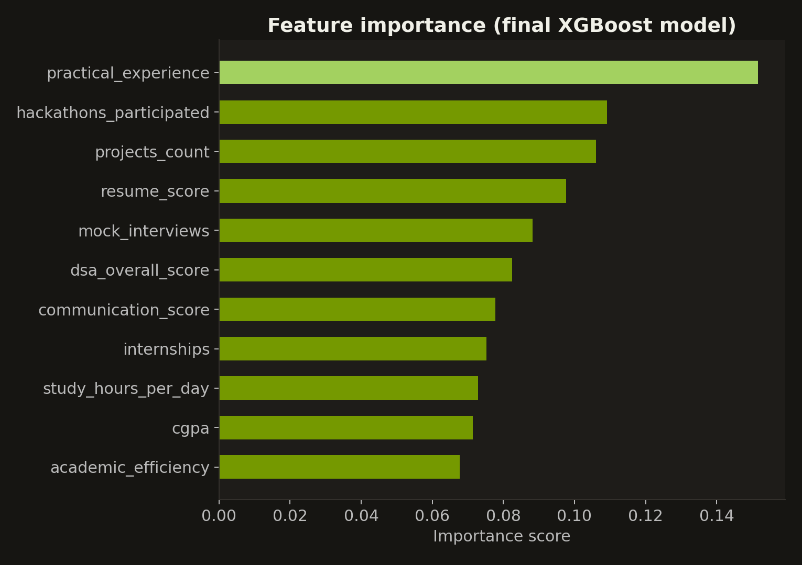

A gradient-boosted model trained on 1,000 students' study habits, DSA practice, projects and interview prep — balanced with SMOTE to take the minority "Not Placed" outcome seriously instead of just predicting the majority class. Enter a student's profile below and the model runs the prediction right here in your browser.
1,000 student records — CGPA, daily study hours, DSA practice, projects, internships, mock interviews, communication and resume scores, and hackathon participation — checked for what actually correlates with getting placed, before any model was trained.




Move the sliders to describe a student. The model — exported to ONNX and running entirely in your browser, no server involved — scores it instantly.
Three engineered features drive most of the signal: academic_efficiency (CGPA × study hours), practical_experience (projects + 2× internships), and dsa_overall_score (DSA hours × problems solved ÷ 100), which replaces two collinear raw columns.
Features are standardized, then SMOTE oversamples the minority "Not Placed" class in the training split only. The final estimator is an XGBoost classifier (400 trees, depth 5, learning rate 0.03) tuned for this balanced training set.
The trained model is exported to ONNX and loaded with onnxruntime-web. There's no backend: every prediction on this page runs locally on your device, using the exact scaler and feature order from training.